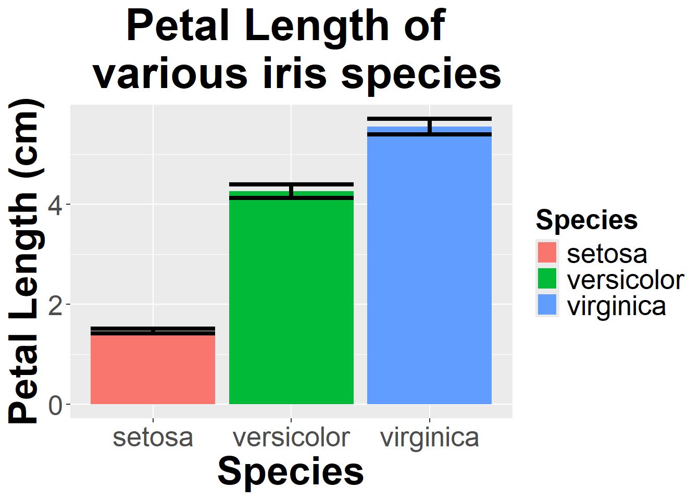
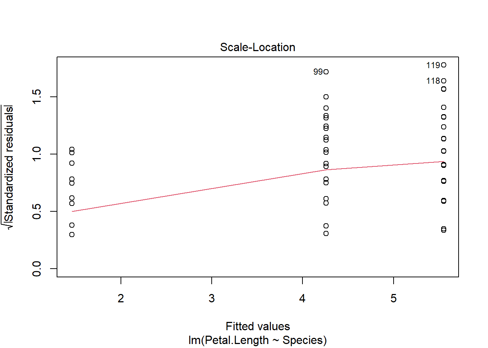
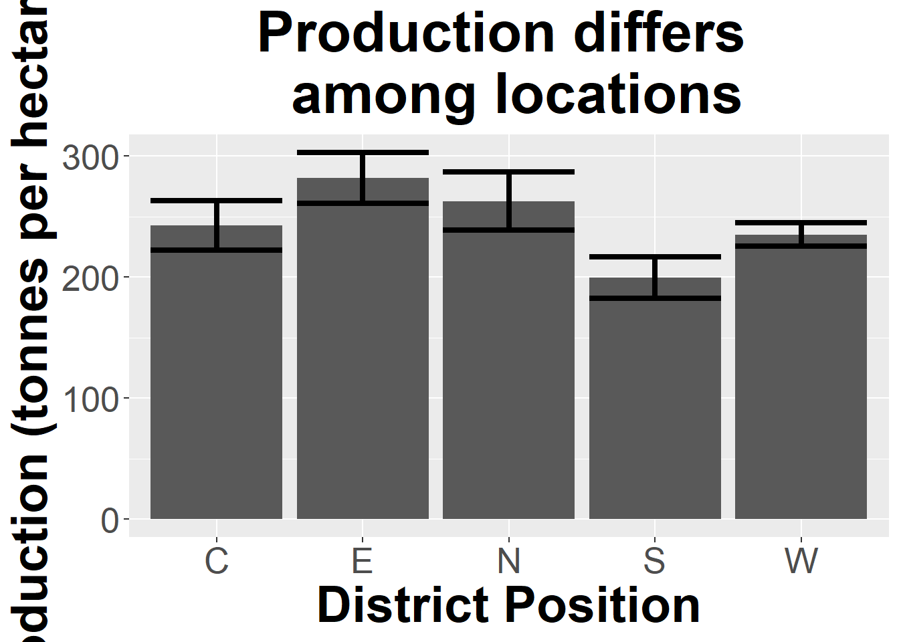
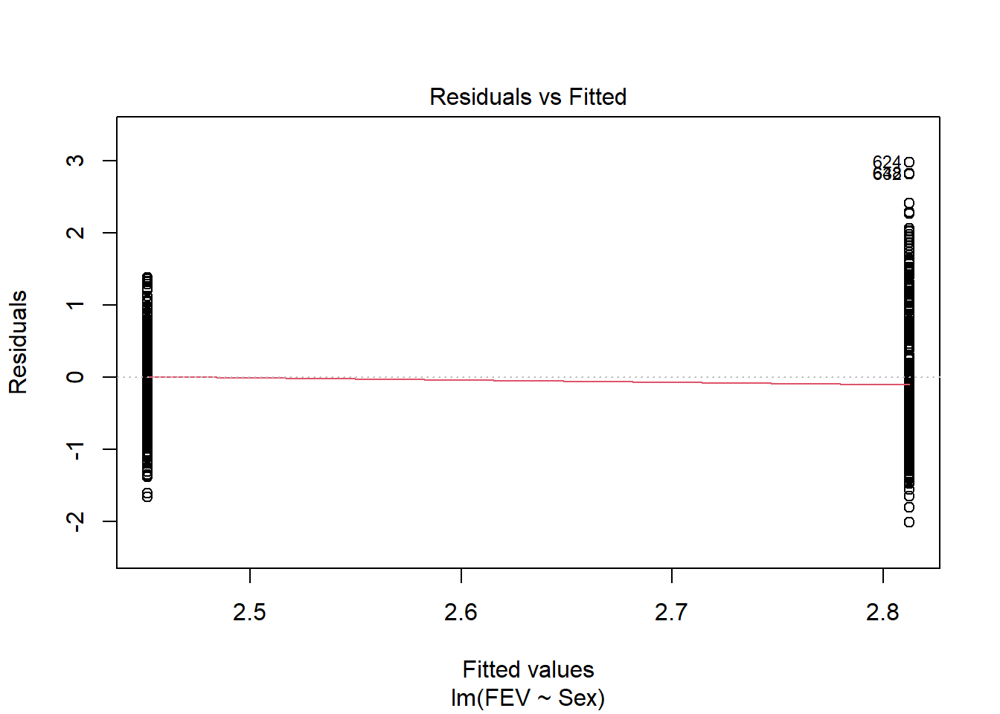

iris_anova <- lm(Sepal.Length~Species, iris)Compare means among groups
Remember you should
- add code chunks by clicking the Insert Chunk button on the toolbar or by pressing Ctrl+Alt+I to answer the questions!
- knit your file to produce a markdown version that you can see!
- save your work often
- commit it via git!
- push updates to github
Overview
This practice reviews the Compare means among groups lecture.
Examples
We will run ANOVA’s using the lm function to connect them to other test. First, build the model
Then use the object it created to test assumptions
par(mfrow = c(2,2))
plot(iris_anova)
If assumptions are met, check the p-value using the summary or Anova function.
summary(iris_anova)
Call:
lm(formula = Sepal.Length ~ Species, data = iris)
Residuals:
Min 1Q Median 3Q Max
-1.6880 -0.3285 -0.0060 0.3120 1.3120
Coefficients:
Estimate Std. Error t value Pr(>|t|)
(Intercept) 5.0060 0.0728 68.762 < 2e-16 ***
Speciesversicolor 0.9300 0.1030 9.033 8.77e-16 ***
Speciesvirginica 1.5820 0.1030 15.366 < 2e-16 ***
---
Signif. codes: 0 '***' 0.001 '**' 0.01 '*' 0.05 '.' 0.1 ' ' 1
Residual standard error: 0.5148 on 147 degrees of freedom
Multiple R-squared: 0.6187, Adjusted R-squared: 0.6135
F-statistic: 119.3 on 2 and 147 DF, p-value: < 2.2e-16library(car)Loading required package: carDataAnova(iris_anova, type = "III")Anova Table (Type III tests)
Response: Sepal.Length
Sum Sq Df F value Pr(>F)
(Intercept) 1253.00 1 4728.16 < 2.2e-16 ***
Species 63.21 2 119.26 < 2.2e-16 ***
Residuals 38.96 147
---
Signif. codes: 0 '***' 0.001 '**' 0.01 '*' 0.05 '.' 0.1 ' ' 1If the overall test is significant, carry out post hoc tests (Tukey shown here for all pairs, as most common)
library(multcomp)Loading required package: mvtnormLoading required package: survivalLoading required package: TH.dataLoading required package: MASS
Attaching package: 'TH.data'The following object is masked from 'package:MASS':
geysercompare_cont_tukey <- glht(iris_anova, linfct = mcp(Species = "Tukey"))
summary(compare_cont_tukey)
Simultaneous Tests for General Linear Hypotheses
Multiple Comparisons of Means: Tukey Contrasts
Fit: lm(formula = Sepal.Length ~ Species, data = iris)
Linear Hypotheses:
Estimate Std. Error t value Pr(>|t|)
versicolor - setosa == 0 0.930 0.103 9.033 <1e-08 ***
virginica - setosa == 0 1.582 0.103 15.366 <1e-08 ***
virginica - versicolor == 0 0.652 0.103 6.333 <1e-08 ***
---
Signif. codes: 0 '***' 0.001 '**' 0.01 '*' 0.05 '.' 0.1 ' ' 1
(Adjusted p values reported -- single-step method)If assumptions are not met, we can use the Kruskal Wallis non-parametric test and associated post hoc tests.
kruskal.test(Sepal.Length ~ Species, data = iris)
Kruskal-Wallis rank sum test
data: Sepal.Length by Species
Kruskal-Wallis chi-squared = 96.937, df = 2, p-value < 2.2e-16pairwise.wilcox.test(iris$Sepal.Length,
iris$Species,
p.adjust.method="holm")
Pairwise comparisons using Wilcoxon rank sum test with continuity correction
data: iris$Sepal.Length and iris$Species
setosa versicolor
versicolor 1.7e-13 -
virginica < 2e-16 5.9e-07
P value adjustment method: holm or a bootstrap alternative
library(WRS2)
t1waybt(Sepal.Length~Species, iris)Call:
t1waybt(formula = Sepal.Length ~ Species, data = iris)
Effective number of bootstrap samples was 599.
Test statistic: 111.9502
p-value: 0
Variance explained: 0.716
Effect size: 0.846 bootstrap_post_hoc <- mcppb20(Sepal.Length~Species, iris)
p.adjust(as.numeric(bootstrap_post_hoc$comp[,6]), "holm")[1] 0 0 0For 2 groups, the boot.t.test function in the MKinfer package is also an option.
Just for practice
1
Use the iris dataset in R to determine if petal length differs among species. Do this problems using ANOVA, Kruskal-Wallis, and bootstrapping methods. Make sure you can plot the data and carry out multiple comparison methods as needed. Also be sure to understand the use of coefficients and adjusted R2 values and where to find them.
#plot
library(Rmisc)Loading required package: latticeLoading required package: plyrfunction_output <- summarySE(iris, measurevar="Petal.Length", groupvars =
c("Species"))
library(ggplot2)
ggplot(function_output, aes(x=Species, y=Petal.Length)) +
geom_col(aes(fill=Species), size = 3) +
geom_errorbar(aes(ymin=Petal.Length-ci, ymax=Petal.Length+ci), size=1.5) +
ylab("Petal Length (cm)")+ggtitle("Petal Length of \n various iris species")+
theme(axis.title.x = element_text(face="bold", size=28),
axis.title.y = element_text(face="bold", size=28),
axis.text.y = element_text(size=20),
axis.text.x = element_text(size=20),
legend.text =element_text(size=20),
legend.title = element_text(size=20, face="bold"),
plot.title = element_text(hjust = 0.5, face="bold", size=32))Warning: Using `size` aesthetic for lines was deprecated in ggplot2 3.4.0.
ℹ Please use `linewidth` instead.
petal <- lm(Petal.Length ~ Species, iris)
plot(petal)


library(car)
Anova(petal, type = "III")Anova Table (Type III tests)
Response: Petal.Length
Sum Sq Df F value Pr(>F)
(Intercept) 106.87 1 577.1 < 2.2e-16 ***
Species 437.10 2 1180.2 < 2.2e-16 ***
Residuals 27.22 147
---
Signif. codes: 0 '***' 0.001 '**' 0.01 '*' 0.05 '.' 0.1 ' ' 1#compare to
summary(petal)
Call:
lm(formula = Petal.Length ~ Species, data = iris)
Residuals:
Min 1Q Median 3Q Max
-1.260 -0.258 0.038 0.240 1.348
Coefficients:
Estimate Std. Error t value Pr(>|t|)
(Intercept) 1.46200 0.06086 24.02 <2e-16 ***
Speciesversicolor 2.79800 0.08607 32.51 <2e-16 ***
Speciesvirginica 4.09000 0.08607 47.52 <2e-16 ***
---
Signif. codes: 0 '***' 0.001 '**' 0.01 '*' 0.05 '.' 0.1 ' ' 1
Residual standard error: 0.4303 on 147 degrees of freedom
Multiple R-squared: 0.9414, Adjusted R-squared: 0.9406
F-statistic: 1180 on 2 and 147 DF, p-value: < 2.2e-16library(multcomp)
comp_cholest <- glht(petal, linfct = mcp(Species = "Tukey"))
summary(comp_cholest)
Simultaneous Tests for General Linear Hypotheses
Multiple Comparisons of Means: Tukey Contrasts
Fit: lm(formula = Petal.Length ~ Species, data = iris)
Linear Hypotheses:
Estimate Std. Error t value Pr(>|t|)
versicolor - setosa == 0 2.79800 0.08607 32.51 <2e-16 ***
virginica - setosa == 0 4.09000 0.08607 47.52 <2e-16 ***
virginica - versicolor == 0 1.29200 0.08607 15.01 <2e-16 ***
---
Signif. codes: 0 '***' 0.001 '**' 0.01 '*' 0.05 '.' 0.1 ' ' 1
(Adjusted p values reported -- single-step method)#kw approach
petal <- kruskal.test(Petal.Length ~ Species, iris)
pairwise.wilcox.test(iris$Sepal.Length,
iris$Species,
p.adjust.method="holm")
Pairwise comparisons using Wilcoxon rank sum test with continuity correction
data: iris$Sepal.Length and iris$Species
setosa versicolor
versicolor 1.7e-13 -
virginica < 2e-16 5.9e-07
P value adjustment method: holm #bootstrap
library(WRS2)
t1waybt(Petal.Length~Species, iris)Call:
t1waybt(formula = Petal.Length ~ Species, data = iris)
Effective number of bootstrap samples was 599.
Test statistic: 1510.684
p-value: 0
Variance explained: 0.71
Effect size: 0.843 bootstrap_post_hoc <- mcppb20(Petal.Length~Species, iris)
#use p.adjust to correct for FWER
p.adjust(as.numeric(bootstrap_post_hoc$comp[,6]), "holm")[1] 0 0 0*Answer: We used an ANOVA (a special case of linear models) to investigate how a numerical response variable differed among 3 groups. This was appropriate as evidenced by the residual plots (there is no pattern in the residuals and they are normally distributed), but other methods are demonstrated as well.
Using an ANOVA, we found F2,147= 1180.2, which led to a p-value of <.001. Given this, I reject the null hypothesis there is no difference among mean measurements for each species.
Post-hoc testing indicated all species significantly differed from all others (all p <.05) using a Tukey approach to control for family-wise error rate. Kruskal-Wallis and bootstrapping approaches led to similar conclusions.*
2
Data on plant heights (in cm) for plants grown with a new and old formulation of fertilizer can be found at
Analyze this data using the t.test function and the lm function to convince yourself that t-tests are special cases of ANOVAs, which are special cases of linear models!
fertilizer <- read.csv("https://docs.google.com/spreadsheets/d/e/2PACX-1vSUVowOKlmTic4ekL7LSbwDcqrsDSXv5K_c4Qyfcvz1lLE1_iINmGzy0zMGxY7z5DImlUErK4S2wY7Y/pub?gid=0&single=true&output=csv",
stringsAsFactors = T)
#note use of var.equal! assumption of ANOVAs
t.test(height ~ fertilizer, fertilizer, var.equal = T)
Two Sample t-test
data: height by fertilizer
t = 2.9884, df = 16, p-value = 0.008686
alternative hypothesis: true difference in means between group new and group old is not equal to 0
95 percent confidence interval:
1.34853 7.93147
sample estimates:
mean in group new mean in group old
56.55 51.91 fert_lm <- lm(height ~ fertilizer, fertilizer)
plot(fert_lm)
summary(fert_lm)
Call:
lm(formula = height ~ fertilizer, data = fertilizer)
Residuals:
Min 1Q Median 3Q Max
-4.25 -2.61 -0.21 2.38 6.39
Coefficients:
Estimate Std. Error t value Pr(>|t|)
(Intercept) 56.550 1.157 48.865 < 2e-16 ***
fertilizerold -4.640 1.553 -2.988 0.00869 **
---
Signif. codes: 0 '***' 0.001 '**' 0.01 '*' 0.05 '.' 0.1 ' ' 1
Residual standard error: 3.273 on 16 degrees of freedom
Multiple R-squared: 0.3582, Adjusted R-squared: 0.3181
F-statistic: 8.931 on 1 and 16 DF, p-value: 0.008686require(car)
Anova(fert_lm, type = "III")Anova Table (Type III tests)
Response: height
Sum Sq Df F value Pr(>F)
(Intercept) 25583.2 1 2387.7612 < 2.2e-16 ***
fertilizer 95.7 1 8.9308 0.008686 **
Residuals 171.4 16
---
Signif. codes: 0 '***' 0.001 '**' 0.01 '*' 0.05 '.' 0.1 ' ' 1Answer: t-tests and ANOVA (lm) approaches yield the same results. Note for the tests to match exactly we have to assume equal variances among groups for the t-tests. In both we reject the null hypothesis of no difference among mean height of plants based on fertilizer. Notice the t statistic (2.9884) is the square root of the F statistic (8.931). The t distribution corresponds to the F with only 1 df in the numerator (so its not listed!).
For the following questions, pick the appropriate method for analyzing the question. Use a plot of the data and/or model analysis to justify your decision. Make sure you can carry out multiple comparison methods as needed. Also be sure to understand the use of coefficients and adjusted R2 values and where to find them.
3
Data on sugar cane yield for multiple fields is available using
read.table(“https://docs.google.com/spreadsheets/d/e/2PACX-1vRjstKreIM6UknyKFQCtw2_Q6itY9iOAVWO1hUNZkBFL8mwVssvTevqgzV22YDKCUeJq0HBDrsBrf5O/pub?gid=971470377&single=true&output=tsv”, header = T, stringsAsFactors = T)
More info on the data can be found at http://www.statsci.org/data/oz/cane.html. Is there evidence that location (DistrictPosition column) impacts yield (Tonn.Hect column)? If so, which areas are driving this distance?
cane <- read.table("https://docs.google.com/spreadsheets/d/e/2PACX-1vRjstKreIM6UknyKFQCtw2_Q6itY9iOAVWO1hUNZkBFL8mwVssvTevqgzV22YDKCUeJq0HBDrsBrf5O/pub?gid=971470377&single=true&output=tsv", header = T, stringsAsFactors = T)
summary(cane) District DistrictGroup DistrictPosition
WrightsCreek : 389 BahanaSouth : 498 C: 498
Highleigh : 360 Cairns/Mulgrave(dry) :1517 E: 482
PineCreek : 317 Cairns/Mulgrave(Med-wet): 842 N: 452
LittleMulgrave: 308 MulgravetoBahana : 466 S: 553
Aloomba : 284 NorthCairns : 452 W:1790
Hambledon : 267
(Other) :1850
SoilID SoilName Area Variety Ratoon
Min. :442.0 Liverpool: 737 Min. : 0.020 138 :629 1R :767
1st Qu.:712.0 Mission : 399 1st Qu.: 0.880 120 :598 2R :760
Median :801.0 Innisfail: 330 Median : 1.940 152 :513 3R :692
Mean :757.5 Virgil : 272 Mean : 2.578 124 :466 4R :493
3rd Qu.:816.0 Thorpe : 237 3rd Qu.: 3.620 113 :358 PL :360
Max. :838.0 Edmonton : 220 Max. :38.270 117 :319 RP :304
(Other) :1580 (Other):892 (Other):399
Age HarvestMonth HarvestDuration Tonn.Hect
Min. :0.000 Min. : 6.0 Min. : 0.000 Min. : 1.45
1st Qu.:1.000 1st Qu.: 7.0 1st Qu.: 0.000 1st Qu.: 75.54
Median :2.000 Median : 9.0 Median : 1.000 Median : 173.46
Mean :2.151 Mean : 8.6 Mean : 9.175 Mean : 240.11
3rd Qu.:3.000 3rd Qu.:10.0 3rd Qu.: 3.000 3rd Qu.: 336.40
Max. :8.000 Max. :11.0 Max. :155.000 Max. :1954.01
Fibre Sugar Jul.96 Aug.96
Min. :14.20 Min. : 6.08 Min. : 0.0 Min. : 2.200
1st Qu.:15.38 1st Qu.:10.93 1st Qu.: 42.2 1st Qu.: 4.500
Median :15.80 Median :11.84 Median : 46.0 Median : 7.100
Mean :15.87 Mean :11.82 Mean : 50.9 Mean : 9.274
3rd Qu.:16.25 3rd Qu.:12.73 3rd Qu.: 61.0 3rd Qu.: 9.900
Max. :19.10 Max. :17.36 Max. :141.5 Max. :36.000
Sep.96 Oct.96 Nov.96 Dec.96
Min. : 0.000 Min. :137.5 Min. : 6.00 Min. :128.5
1st Qu.: 0.000 1st Qu.:181.8 1st Qu.: 17.60 1st Qu.:161.9
Median : 5.000 Median :224.8 Median : 31.00 Median :239.5
Mean : 5.932 Mean :219.8 Mean : 40.39 Mean :223.6
3rd Qu.:11.200 3rd Qu.:240.3 3rd Qu.: 39.50 3rd Qu.:241.4
Max. :14.000 Max. :308.0 Max. :100.60 Max. :353.5
Jan.97 Feb.97 Mar.97 Apr.97
Min. :287.5 Min. :275.8 Min. :326.0 Min. : 0.0
1st Qu.:321.8 1st Qu.:284.0 1st Qu.:326.0 1st Qu.: 49.3
Median :443.8 Median :386.6 Median :426.0 Median : 87.8
Mean :455.2 Mean :419.6 Mean :415.1 Mean :105.0
3rd Qu.:508.8 3rd Qu.:495.6 3rd Qu.:480.5 3rd Qu.:176.0
Max. :746.5 Max. :677.5 Max. :494.3 Max. :217.5
May.97 Jun.97 Jul.97 Aug.97
Min. : 30.00 Min. : 34.20 Min. : 8.60 Min. : 18.80
1st Qu.: 44.60 1st Qu.: 40.20 1st Qu.: 16.40 1st Qu.: 39.20
Median : 63.50 Median : 41.00 Median : 24.00 Median : 68.00
Mean : 89.99 Mean : 82.62 Mean : 31.65 Mean : 70.47
3rd Qu.: 72.60 3rd Qu.:113.80 3rd Qu.: 28.00 3rd Qu.:112.50
Max. :220.00 Max. :202.00 Max. :109.00 Max. :117.50
Sep.97 Oct.97 Nov.97 Dec.97
Min. : 4.00 Min. : 2.00 Min. : 13.5 Min. : 75.0
1st Qu.: 42.80 1st Qu.: 22.20 1st Qu.: 62.0 1st Qu.:223.0
Median : 73.00 Median : 38.10 Median :123.7 Median :278.3
Mean : 70.46 Mean : 55.53 Mean :114.3 Mean :264.4
3rd Qu.:106.00 3rd Qu.: 53.10 3rd Qu.:167.4 3rd Qu.:315.2
Max. :109.20 Max. :216.50 Max. :198.0 Max. :336.6
cane_summary <- summarySE(cane, measurevar="Tonn.Hect", groupvars =
c("DistrictPosition"))
ggplot(cane_summary, aes(x=DistrictPosition, y=Tonn.Hect)) +
geom_col(size = 3) +
geom_errorbar(aes(ymin=Tonn.Hect-ci, ymax=Tonn.Hect+ci), size=1.5) +
ylab("Production (tonnes per hectare)") +
xlab("District Position") +
ggtitle("Production differs \n among locations") +
theme(axis.title.x = element_text(face="bold", size=28),
axis.title.y = element_text(face="bold", size=28),
axis.text.y = element_text(size=20),
axis.text.x = element_text(size=20),
legend.text =element_text(size=20),
legend.title = element_text(size=20, face="bold"),
plot.title = element_text(hjust = 0.5, face="bold", size=32))
impact_district <- lm(Tonn.Hect ~ DistrictPosition, cane)
summary(impact_district)
Call:
lm(formula = Tonn.Hect ~ DistrictPosition, data = cane)
Residuals:
Min 1Q Median 3Q Max
-274.41 -159.66 -66.07 90.26 1754.55
Coefficients:
Estimate Std. Error t value Pr(>|t|)
(Intercept) 242.418 9.993 24.259 < 2e-16 ***
DistrictPositionE 39.360 14.249 2.762 0.00577 **
DistrictPositionN 20.252 14.487 1.398 0.16222
DistrictPositionS -42.955 13.777 -3.118 0.00183 **
DistrictPositionW -7.317 11.298 -0.648 0.51727
---
Signif. codes: 0 '***' 0.001 '**' 0.01 '*' 0.05 '.' 0.1 ' ' 1
Residual standard error: 223 on 3770 degrees of freedom
Multiple R-squared: 0.0107, Adjusted R-squared: 0.009652
F-statistic: 10.2 on 4 and 3770 DF, p-value: 3.293e-08plot(impact_district)#not really normal...lets bootstraprequire(WRS2)
t1waybt(Tonn.Hect ~ DistrictPosition, cane)Call:
t1waybt(formula = Tonn.Hect ~ DistrictPosition, data = cane)
Effective number of bootstrap samples was 599.
Test statistic: 16.5244
p-value: 0
Variance explained: 0.031
Effect size: 0.177 mcppb20(Tonn.Hect ~ DistrictPosition, cane)Call:
mcppb20(formula = Tonn.Hect ~ DistrictPosition, data = cane)
psihat ci.lower ci.upper p-value
S vs. N -56.10126 -93.60810 -14.89829 0.00000
S vs. E -12.51609 -50.87396 24.06443 0.37396
S vs. W 39.25821 5.56165 74.40707 0.00000
S vs. C -0.97532 -26.23489 29.64067 0.98497
N vs. E 43.58517 -1.20433 79.88198 0.00668
N vs. W 95.35948 57.77474 127.16736 0.00000
N vs. C 55.12595 25.94072 82.10371 0.00000
E vs. W 51.77430 19.55240 84.47792 0.00000
E vs. C 11.54077 -17.44709 43.43943 0.29048
W vs. C -40.23353 -59.86262 -14.20057 0.00000p <- mcppb20(Tonn.Hect ~ DistrictPosition, cane)
p.adjust(as.numeric(p$comp[,6]), "holm") [1] 0.0000000 0.8914858 0.0000000 0.9549249 0.0000000 0.0000000 0.0000000
[8] 0.0000000 0.8914858 0.0000000#compare to lm apporach
require(car)
Anova(impact_district, type = "III")Anova Table (Type III tests)
Response: Tonn.Hect
Sum Sq Df F value Pr(>F)
(Intercept) 29265733 1 588.476 < 2.2e-16 ***
DistrictPosition 2028140 4 10.195 3.293e-08 ***
Residuals 187487281 3770
---
Signif. codes: 0 '***' 0.001 '**' 0.01 '*' 0.05 '.' 0.1 ' ' 1require(multcomp)
comp_district <- glht(impact_district, linfct = mcp(DistrictPosition = "Tukey"))
summary(comp_district)
Simultaneous Tests for General Linear Hypotheses
Multiple Comparisons of Means: Tukey Contrasts
Fit: lm(formula = Tonn.Hect ~ DistrictPosition, data = cane)
Linear Hypotheses:
Estimate Std. Error t value Pr(>|t|)
E - C == 0 39.360 14.249 2.762 0.0441 *
N - C == 0 20.252 14.487 1.398 0.6208
S - C == 0 -42.955 13.777 -3.118 0.0152 *
W - C == 0 -7.317 11.298 -0.648 0.9658
N - E == 0 -19.108 14.601 -1.309 0.6782
S - E == 0 -82.315 13.896 -5.924 <0.001 ***
W - E == 0 -46.677 11.444 -4.079 <0.001 ***
S - N == 0 -63.207 14.141 -4.470 <0.001 ***
W - N == 0 -27.569 11.739 -2.348 0.1259
W - S == 0 35.638 10.850 3.285 0.0088 **
---
Signif. codes: 0 '***' 0.001 '**' 0.01 '*' 0.05 '.' 0.1 ' ' 1
(Adjusted p values reported -- single-step method)Answer: For this analysis I used a bootstrap approach as the residual plots suggested a non-normal distribution. Analysis revealed a test statistics of 16.52 and p-value of 0, so I reject the null hypothesis of no difference among Districts. since I rejected the null hypothesis, I have to use post-hoc tsts to determine which groups are different than the others.
Post-hoc tests reveal all district areas differ from each other except for south and east, south and central, and east and central (using sequential FDR to control for family-wise error rate.)
Note that a linear model does lead to slightly different findings regarding which districts differ from which others.
4
Data on FEV (forced expiratory volume), a measure of lung function, can be found at
http://www.statsci.org/data/general/fev.txt
More information on the dataset is available at
http://www.statsci.org/data/general/fev.html.
Is there evidence that FEV depends on gender? If so, which gender has the higher FEV score? How much variance does gender explain?
fev <- read.table("http://www.statsci.org/data/general/fev.txt", header = T,
stringsAsFactors = T)
fev_summary <- summarySE(fev, measurevar="FEV", groupvars =
c("Sex"))
ggplot(fev_summary, aes(x=Sex, y=FEV)) +
geom_col(size = 3) +
geom_errorbar(aes(ymin=FEV-ci, ymax=FEV+ci), size=1.5) +
ylab("FEV (liters)") +
xlab("Sex") +
ggtitle("FEV differs \n among males and females") +
theme(axis.title.x = element_text(face="bold", size=28),
axis.title.y = element_text(face="bold", size=28),
axis.text.y = element_text(size=20),
axis.text.x = element_text(size=20),
legend.text =element_text(size=20),
legend.title = element_text(size=20, face="bold"),
plot.title = element_text(hjust = 0.5, face="bold", size=32))fev_gender <- lm(FEV ~ Sex, fev)
plot(fev_gender) #anova is fine
Anova(fev_gender, type = "III")Anova Table (Type III tests)
Response: FEV
Sum Sq Df F value Pr(>F)
(Intercept) 1910.62 1 2652.756 < 2.2e-16 ***
Sex 21.32 1 29.607 7.496e-08 ***
Residuals 469.60 652
---
Signif. codes: 0 '***' 0.001 '**' 0.01 '*' 0.05 '.' 0.1 ' ' 1summary(fev_gender)
Call:
lm(formula = FEV ~ Sex, data = fev)
Residuals:
Min 1Q Median 3Q Max
-2.01645 -0.69420 -0.06367 0.58233 2.98055
Coefficients:
Estimate Std. Error t value Pr(>|t|)
(Intercept) 2.45117 0.04759 51.505 < 2e-16 ***
SexMale 0.36128 0.06640 5.441 7.5e-08 ***
---
Signif. codes: 0 '***' 0.001 '**' 0.01 '*' 0.05 '.' 0.1 ' ' 1
Residual standard error: 0.8487 on 652 degrees of freedom
Multiple R-squared: 0.04344, Adjusted R-squared: 0.04197
F-statistic: 29.61 on 1 and 652 DF, p-value: 7.496e-08I used an ANOVA (or linear model, or t-test, here, all the same since 2 groups!) to consider the impact of sex on FEV. This was appropriate as evidenced by the residual plots (there is no pattern in the residuals and they are normally distributed). Results indicate there is a difference among sexes (F1,652 = 29.607, p<.001). There is no need for post-hoc tests here since there are only 2 groups being considered.
Coefficients related to the groups (note female is replaced by intercept here, and the SexMale coefficient is relative to that) indicates that males have a higher FEV on average. Graphs also show this relationship.
5
The following data are human blood clotting times (in minutes) of individuals given one of two different drugs.
| Drug B | Drug G |
|---|---|
| 8.8 | 9.9 |
| 8.4 | 9.0 |
| 7.9 | 11.1 |
| 8.7 | 9.6 |
| 9.1 | 8.7 |
| 9.6 | 10.4 |
| 9.5 |
Test the hypothesis that the mean clotting times are equal for the two groups
- Estimating the variance from the data
drug_b <- c( 8.8, 8.4, 7.9, 8.7, 9.1, 9.6)
drug_g <- c(9.9, 9.0, 11.1, 9.6, 8.7, 10.4, 9.5)
t.test(drug_b, drug_g)
Welch Two Sample t-test
data: drug_b and drug_g
t = -2.5454, df = 10.701, p-value = 0.02774
alternative hypothesis: true difference in means is not equal to 0
95 percent confidence interval:
-1.8543048 -0.1314095
sample estimates:
mean of x mean of y
8.750000 9.742857 Using a un-paired t-test, since the experimental units were not matched and I assumed the means of each group would follow a normal distribution of unknown variance, I found a test statistics of t10.701=-2.544. This corresponds to a p-value of 0.02. This p-value is <.05, so I reject the null hypothesis that the mean clotting times are the same for the two drugs.
- Using rank transform analysis
wilcox.test(drug_b, drug_g)Warning in wilcox.test.default(drug_b, drug_g): cannot compute exact p-value
with ties
Wilcoxon rank sum test with continuity correction
data: drug_b and drug_g
W = 7, p-value = 0.05313
alternative hypothesis: true location shift is not equal to 0Using a un-paired rank-based test, which is appropriate when normality assumptions can’t be met and I assumed the means of each group would follow a similar distribution, I found a test statistics of W=7. This corresponds to a p-value of 0.05. This p-value is >.05, so I fail to reject the null hypothesis that the mean clotting times are the same for the two drugs.
- Using a permutation test
require(coin) #requires data_frameLoading required package: coinclotting <- data.frame(drug = c(rep("drug_b", length(drug_b)), rep("drug_g",
length(drug_g))),
clotting = c(drug_b, drug_g))
clotting$drug <- factor(clotting$drug)
independence_test(clotting ~ drug, clotting)
Asymptotic General Independence Test
data: clotting by drug (drug_b, drug_g)
Z = -2.0726, p-value = 0.03821
alternative hypothesis: two.sidedUsing a permutation test, which is not fully appropriate here due to small sample sizes (and that also assumes similar distributions for each group), I found a test statistics of Z=-2.0726.. This corresponds to a p-value of 0.038. This p-value is >.05, so I fail to reject the null hypothesis that the mean clotting times are the same for the two drugs.
- Using a bootstrap test
library(MKinfer)Warning: package 'MKinfer' was built under R version 4.2.3boot.t.test(drug_b, drug_g)
Bootstrap Welch Two Sample t-test
data: drug_b and drug_g
bootstrap p-value = 0.0224
bootstrap difference of means (SE) = -0.9917475 (0.3527525)
95 percent bootstrap percentile confidence interval:
-1.7000000 -0.3095238
Results without bootstrap:
t = -2.5454, df = 10.701, p-value = 0.02774
alternative hypothesis: true difference in means is not equal to 0
95 percent confidence interval:
-1.8543048 -0.1314095
sample estimates:
mean of x mean of y
8.750000 9.742857 Using a bootstrap test with 10000 samples, which is not fully appropriate here due to small sample sizes, I found a p value of 0.0047. This p-value is <.05, so I reject the null hypothesis that the mean clotting times are the same for the two drugs.
6
(Example from Handbook on Biological Statistics) Odd (stunted, short, new) feathers were compared in color to typical feathers in Northern Flickers (Colaptes auratus) (Wiebe and Bortolotti 2002) . Data is at
https://raw.githubusercontent.com/jsgosnell/CUNY-BioStats/master/datasets/wiebe_2002_example.csv
Test the hypothesis that odd and typical feathers did not differ using
- a Student’s t test and/or lm
- a rank test
- bootstrapping
Note we will return to this question next week!
- a Student’s t test
feather <- read.csv("https://raw.githubusercontent.com/jsgosnell/CUNY-BioStats/master/datasets/wiebe_2002_example.csv", stringsAsFactors = T)
t.test(Color_index ~ Feather, data=feather, paired=TRUE)
Paired t-test
data: Color_index by Feather
t = -4.0647, df = 15, p-value = 0.001017
alternative hypothesis: true mean difference is not equal to 0
95 percent confidence interval:
-0.20903152 -0.06521848
sample estimates:
mean difference
-0.137125 *I used a paired t-test because feathers were measured on the same bird.
I also assumed the difference in means was normally distributed given the trait and sample size. The test resulted in a statistic of t15 = -4.06. This corresponds to a p-value of .001. Since the p-value is <.05, I reject the null hypothesis that feather color is the same between odd and typical feathers. Note this equivalent too:
library(car)
Anova(lm(Color_index ~ Feather+Bird, data=feather))Anova Table (Type II tests)
Response: Color_index
Sum Sq Df F value Pr(>F)
Feather 0.15043 1 16.5214 0.001017 **
Bird 0.21950 15 1.6072 0.184180
Residuals 0.13657 15
---
Signif. codes: 0 '***' 0.001 '**' 0.01 '*' 0.05 '.' 0.1 ' ' 1- a rank test
wilcox.test(Color_index ~ Feather, data=feather, paired=TRUE)
Wilcoxon signed rank exact test
data: Color_index by Feather
V = 10, p-value = 0.001312
alternative hypothesis: true location shift is not equal to 0I used a paired rank-based test because feathers were measured on the same bird. I did not assume the difference in means was normally distributed but did assume it followed a symmetric distribution. The test resulted in a statistic of V = 10. This corresponds to a p-value of .001. Since the p-value is <.05, I reject the null hypothesis that feather color is the same between odd and typical feathers.
- a binary test
library(BSDA)
Attaching package: 'BSDA'The following objects are masked from 'package:carData':
Vocab, WoolThe following object is masked from 'package:datasets':
OrangeSIGN.test(feather[feather$Feather == "Odd", "Color_index"],
feather[feather$Feather == "Typical", "Color_index"])
Dependent-samples Sign-Test
data: feather[feather$Feather == "Odd", "Color_index"] and feather[feather$Feather == "Typical", "Color_index"]
S = 3, p-value = 0.02127
alternative hypothesis: true median difference is not equal to 0
95 percent confidence interval:
-0.24048275 -0.02331055
sample estimates:
median of x-y
-0.114
Achieved and Interpolated Confidence Intervals:
Conf.Level L.E.pt U.E.pt
Lower Achieved CI 0.9232 -0.2400 -0.0320
Interpolated CI 0.9500 -0.2405 -0.0233
Upper Achieved CI 0.9787 -0.2410 -0.0140I used a sign test (always paired!) because feathers were measured on the same bird. I did not assume the difference in means was normally distributed or that the differences followed a symmetric distribution. The test resulted in a statistic of s = 3. This corresponds to a p-value of .02. Since the p-value is <.05, I reject the null hypothesis that feather color is the same between odd and typical feathers.
- bootstrapping
library(MKinfer)
boot.t.test(Color_index ~ Feather, data=feather, paired=TRUE)
Bootstrap Paired t-test
data: Color_index by Feather
bootstrap p-value = 4e-04
bootstrap mean of the differences (SE) = -0.1372715 (0.03230978)
95 percent bootstrap percentile confidence interval:
-0.2025656 -0.0756875
Results without bootstrap:
t = -4.0647, df = 15, p-value = 0.001017
alternative hypothesis: true difference in means is not equal to 0
95 percent confidence interval:
-0.20903152 -0.06521848
sample estimates:
mean of the differences
-0.137125 Since feathers were measured on the same bird. I used a bootstrap (10,000 samples) focused on the difference in color. This resulted in a p-value of <.001. Since the p-value is <.05, I reject the null hypothesis that feather color is the same between odd and typical feathers.
References
Wiebe, Karen L., and Gary R. Bortolotti. 2002. “Variation in Carotenoid-Based Color in Northern Flickers in a Hybrid Zone.” The Wilson Bulletin 114 (3): 393–400. http://www.jstor.org/stable/4164474.